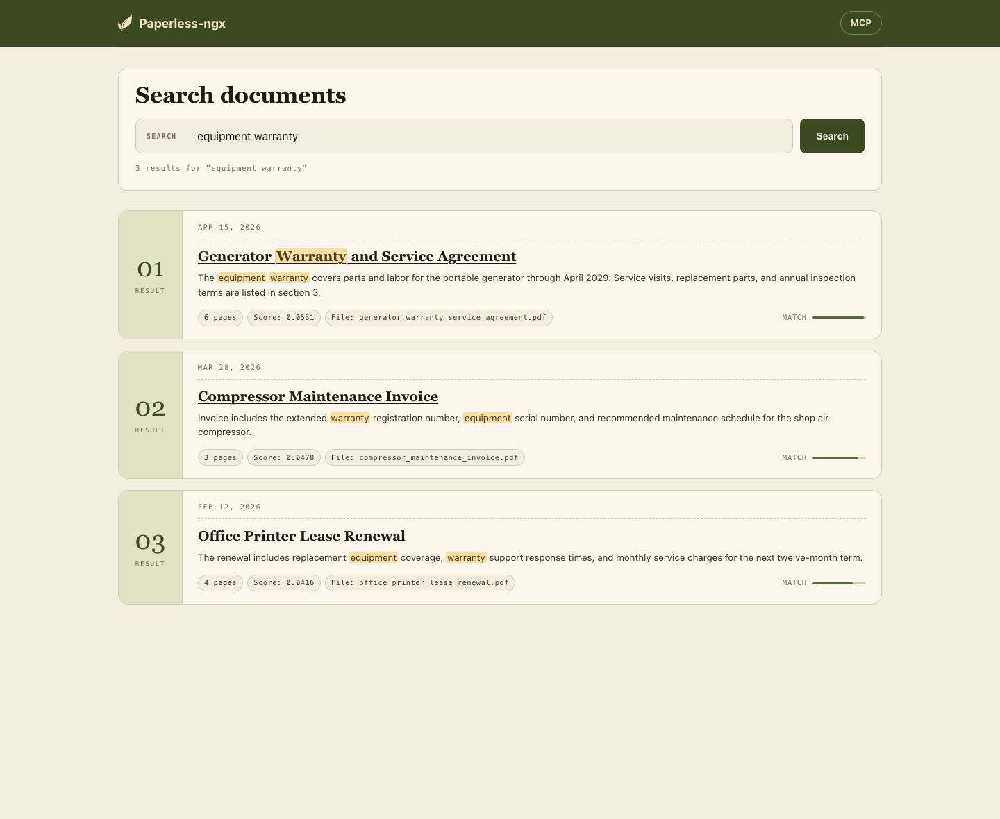
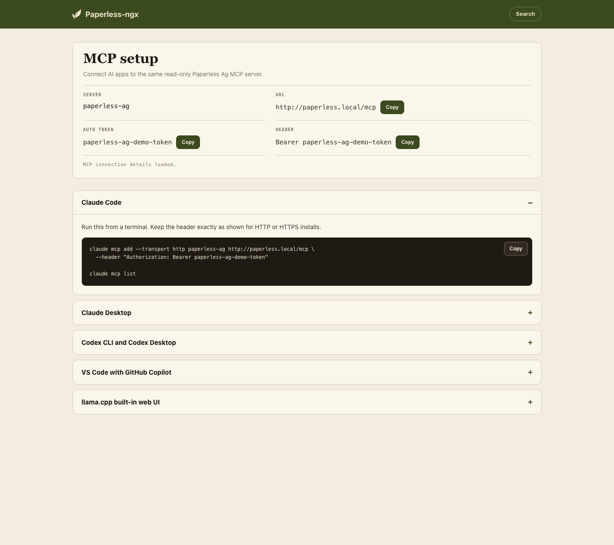

Semantic search for Paperless-ngx, with browser search and optional MCP access for AI apps.
SSH into your Linux server and run:
curl -fsSL https://paperless.fullstack.ag/install.sh | bashThe installer will walk you through setup. It works on any VPS (DigitalOcean, Hetzner, Linode, Vultr) and detects if you already have Paperless-ngx running.
/search that uses your
Paperless login
After installation, open your Paperless URL and add
/search. Results open in the stock Paperless document page.
https://yourdomain.com/search
/search page reuses your Paperless login and links each
result back to the stock document viewer.
MCP support is optional. It lets AI apps use Paperless AI's read-only search tools without exposing Postgres or changing Paperless-ngx.
After installation, log in to Paperless and open
/search/mcp. That page shows your MCP server URL, the auth
token for Paperless admins, and current setup instructions for Claude,
Codex, VS Code/Copilot, and llama.cpp.

/search/mcp page keeps the app-specific MCP setup
instructions behind the same Paperless login.